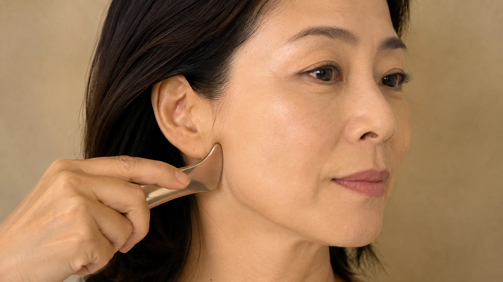

The Bojin Journal · Jaw & Neck
Jowls Forming Along Your Jawline? What's Underneath

A student pointed at the soft little pouches that had settled at the sides of her jaw and said, "I used to have one clean line here." She wasn't imagining it. Jowls are the moment the jawline stops being one crisp edge and starts having two soft corners. They aren't a double chin, and they aren't simply weight, and confusing them for either is why the cream she'd been patting on for a year did nothing.
The hammock, and its anchor points
Picture the soft tissue of your lower cheek as a hammock. It hangs between two anchor points: up near the cheekbone, and down along the jaw. When both anchors hold firm, the hammock stays taut and your jaw reads as a single line. Over the years the upper anchor loosens, the tissue slides down the jawbone, and it bunches at the sides where the jaw turns up toward the ear. That bunching is the jowl.
A jowl is soft tissue that has slipped down and pooled at the side of the jaw. Some of that is structural loosening you can't reverse by hand. But a real share of the heavy, dragging feel is tension holding the tissue tight and fluid settling into the pouch, and those two you can genuinely ease.
This is also why the jowl is a different job from the double chin under your chin. That one sits in the center and is mostly about a clenched jaw and pooled fluid. The jowl sits off to the sides. Same lower face, two different spots, two different sequences.
What you can reach, and what you can't
I'll be honest with you before the steps, not after. You cannot re-tighten the anchor that loosened, and no gentle method rebuilds it. What a release reaches is the layer sitting on top: the tension along the jaw that pulls everything taut and downward, and the fluid that settles into the soft pouch by evening. Ease those and the jaw reads a little cleaner and feels less heavy, gently and temporarily, building with practice rather than arriving overnight.
A 5-minute jowl release
Use a little oil or your regular moisturizer for glide. Work with clean fingertips or the flat edge of a gua sha stone.
- Warm the whole lower face first A few slow passes from the chin out along the jaw toward each ear, easy pressure, just waking the area up before you work any one spot.
- Find the pouch, then work behind it, not on it Set your fingertips just in front of the ear, at the top corner of the jaw, and make short passes down along the bone. You're easing the tension above the jowl that lets it drag, not pressing on the soft pouch itself.
- Follow the jawbone forward Move along the underside of the jaw from ear toward chin in slow, short strokes, following the bone the whole way so the tool stays supported.
- Lift the upper anchor A few gentle upward passes along the cheekbone above, since the hammock hangs from up there too, and a settled upper cheek gives the lower face a little more to hang from.
- Finish down the neck, every time Long, slow sweeps from the jaw down the sides of the neck. This is the step that gives the fluid you moved somewhere to go, and skipping it is the most common mistake.
An honest expectation
Done a few times a week, this can make the jawline look a touch cleaner and feel less heavy by evening, and the change builds slowly rather than showing up after one session. It will not restore the structural support that time loosened, and I'd be selling you something if I said it could. If jowls trouble you enough to be weighing a procedure, this is a reasonable, honest thing to try alongside talking to a professional, not a replacement for that conversation.
Your jawline didn't fail you. The hammock just settled, the way every hammock does. You can't re-hang the far anchor by hand, but easing what's piled at the near one is enough to give the line back some of its edge.
Quick answers
Are jowls the same as a double chin?
No, and treating them as one problem is why so much advice misses. A double chin sits under the chin, in the center, and is often about pooled fluid and a clenched jaw. Jowls sit at the sides, along the jawline, where the cheek's soft tissue slips past the jawbone. Different spots, different work.
Can a gentle method actually lift a jowl?
It won't rebuild the underlying support that loosened over years, and no hands-on habit does. What it can reach is the tension and pooled fluid layered on top, which for many women accounts for more of the heavy, dragging look than they expect. The effect is gentle and temporary, built by consistency.
Does losing weight get rid of jowls?
Sometimes a little, sometimes not at all, and occasionally weight loss makes them look softer because the skin that held the fullness now has less behind it. Jowls are mostly about how the tissue sits, not just how much of it there is, which is why the scale isn't the whole story.
Which way should I work, up or down?
Work the jaw itself along the bone toward the ear, and always finish by sweeping down the neck to give fluid a route out. You're easing the tension that lets the tissue drag, not trying to shove it upward by force, which the skin won't thank you for.
See where the jaw work actually goes
The spot that matters here is behind the jowl, not on it, and that's easier to see than to read. My free 3-minute video shows the exact path along the jaw and down the neck.
Watch the free 3-min videoYu-Ting Lan is a Taiwan-based international bojin instructor and the founder of Héhé Studio. She has taught her bojin method to more than a thousand students, from complete beginners to grandmothers, across Taiwan, Hong Kong, and Malaysia.